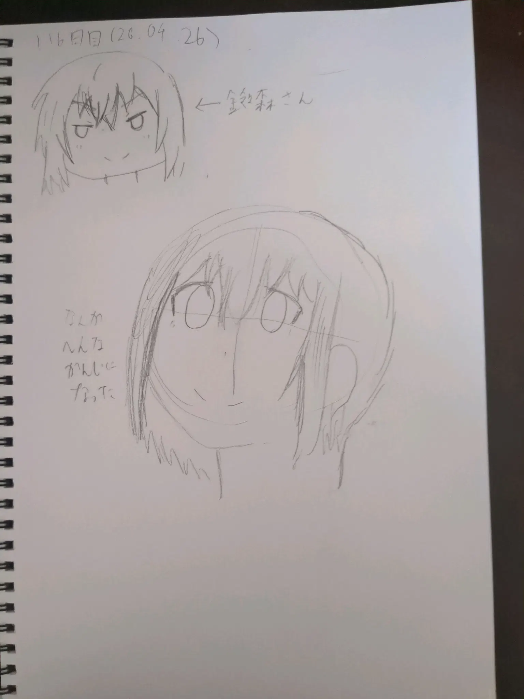

新しいノートPCを検討しています
まだ買う予定はないのですが、現在はもし買うとしたらの以下のノートPCを考えています。
- メインで使うなら14インチ（16インチは大きすぎる、デスクトップがあるので不要）
- 65Wでも十分に充電可能
- 十分なCPUと、内蔵グラフィック性能
- メモリが交換可能
など、いろいろ考えた結果、ThinkPad P14s Gen 6のAMD版カスタムモデルに至りました。まだ買うわけではないのですが。
スペックは以下で決めています。
- OS: Linux系（当然）
- CPU: AMD Ryzen AI 7 (NPU内蔵)
- RAM - 32GB DDR5-5600 SDRAM (SO-DIMM x 2)
- SSD - 1TB NVMe SSD
- ディスプレイ - 14" WUXGA IPS液晶
普通にBTOしたら高くつきますが、MacBookと違いメモリやSSDは交換可能なようなので、後から買うことも可能です。やったぜ。
脱〇〇のコーナー Link to heading
- 脱X 28日目
- 脱YouTube 0日目 （リセット、最高記録8日）
- 脱AI 0日目 （リセット）
今日からDuck AIは除外することにしますか…。
勉強のコーナー Link to heading
毎日連続勉強。。。ブログ時点でやっていません…
プログラミングのコーナー Link to heading
苦Cをちょっと読んだ…だけ。
お絵描きのコーナー Link to heading
116日目。

いろいろコーナー Link to heading
昨日はUTMでいろいろ遊んでいたら1時半ぐらいになって慌てて寝ました。そんで今日は朝5時ぐらいに起きました。。。眠かった。。。
コーヒー飲みすぎたせいでバイト中気持ち悪かったです。
あと小遣いの計画表を立ててました。パーツが高騰している中8TBのNAS用HDDを2台にお金をかけられないので4TBのWD Blue(5,400-rpm)で妥協しようと思います。使おうと思えば使えるだろうし。